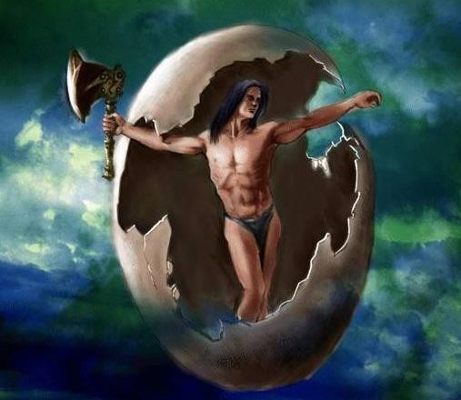

「반고신화」원문분석

중국 허난성 퉁바이현, 비양현 지방 전통 민간문학, 국가급 무형문화유산 중 하나.
내용
아주 먼 옛날, 이 세상은 검고 흐린 모습의 하나의 알로 이루어져 있었다. 그 안에 한 사람이 웅크리고 있었으니 그가 바로 반고이다.깜깜한 알 속이 싫었던 반고는 어느날 알을 깨어버렸다.
이때 알 속에 있던 무거운 것들은 가라앉고 가벼운 것들은 위로 치솟았다. 하지만 다시 무거운 것들과 가벼운 것들이 모여 혼돈의 상태로 가려고 하자, 반고는 자신의 두 다리와 두 팔로 무거
운 것들과 가벼운 것들을 떼어놓기 위해 애를 썼다. 반고의 키는 하루에 한 자씩 자랐으며, 이로 인해 하늘과 땅이 점점 멀어지게 되었다."는 테리다.
반고가 울 때 그의 눈물은 강이 되고, 숨결은 바람이 되었다. 목소리는 천둥, 눈빛은 번개가 되었다. 그가 기쁠 때는 하늘도 맑았고, 슬플 때는 흐려졌다.
이렇게 애를 쓴 것이 무려 18,000년이었고, 무거운 것과 가벼운 것이 서로 9만리의 거리의 거리로 멀어지자 드디어 반고는 혼돈을 막았다고 안심하며 대지에 누워 휴식을 취했고, 그 상태로
죽게 된다. 그가 죽을 때 두 눈동자는 태양과 달이 되었고, 사지는 산, 피는 강, 혈관과 근육은 길, 살은 논밭, 수염은 벼로 피부는 초목이 되었다. 또한, 반고가 죽을 때, 그의 몸에서 생겨난
구더기가 바람으로 만나 인간이 되었다.
이렇게 세상이 만들어졌다. 중국의 난하이 제도 근처에는 3백리에 달하는 반고의 묘가 있다고 한다.
내용 분석
① 천지의 분리 :
하늘과 땅이 열리기 전에 우주는 큰 달걀처럼 혼돈했다. 반고는 큰 달걀에서 10만 8천 년 동안 자고 깨어났다.
주위의 어둠을 발견하고, 거대한 손바닥을 벌려 어둠을 향해 쪼개고, 큰 소리를 내며 큰 달걀이 깨졌다. 그 속에서 혼탁한 것들이 서서히 내려와 발 밑의 땅이 되었다.
반고는 하늘과 땅이 다시 합쳐져서 예전의 모습으로 변할 까봐 손으로 푸른 하늘을 받치고 두 발로 땅을 밟으며자신의 몸을 하루하루 키가 컸고 하늘과 땅도 그의 몸에
따라 하루하루 키가 커졌다.
② 인간의 창조 :
반고가 죽기 전 입에서 뿜어져 나오는 숨결은 사계절 떠다니는 구름, 소리는 벼락, 왼쪽 눈은 태양, 오른쪽 눈은 달, 머리카락과 수염은 밤하늘의 별, 몸은 동·서남·북의 사극과 웅장한 삼산,
몸은 동·서남·북의 사극과 웅장한 삼산, 혈액은 강, 경맥은 도로, 근육은 농경지, 치아와 뼈와 골수는 지하광물, 피부와 땀은 대지의 초목, 땀은 비이슬이 되었다. 반고의 영혼도 죽은 후에
인간이 되었다.
문학사상
① 반고신화는 수천년동안 전승되어 왔으며 민중과 사회의 뿌리가 깊다.
② 문화적 차원에는 자연계에 대한 원시적 탐구와 상상이 함축되어 있고 ‘우주의 기원, 인류의 기원’ 교리가 담겨 있기 때문에 중화민족의 우수한 문화유산의 중요한 부분이다.
③ 반고의 이미지 자체는 사람 자신의 관찰에서 비롯된 것으로 반고가 ‘혼돈’에서 태어났다든지 반구의 다양한 체형적 특징에서든 반고는 접지적인 창조자이다.
④ 수많은 문화 조상, 문화 영웅의 화신이며 중국인들이 자신들의 문화에 따라 끊임없이 풍부하고 발전하여 형성된 창세의 대신임을 보여준다.
⑤ 내용은 천지를 개척하고, 인간을 번식하고, 만물을 체화시키는 등 원시 선민의 자연 숭배를 반영하고 선민의 원시 우주관을 반영한다.
전승 현황
① 반고신화는 수천년동안 전승되어 왔으며 민중과 사회의 뿌리가 깊다.
② 문화적 차원에는 자연계에 대한 원시적 탐구와 상상이 함축되어 있고 ‘우주의 기원, 인류의 기원’ 교리가 담겨 있기 때문에 중화민족의 우수한 문화유산의 중요한 부분이다.
③ 반고의 이미지 자체는 사람 자신의 관찰에서 비롯된 것으로 반고가 ‘혼돈’에서 태어났다든지 반구의 다양한 체형적 특징에서든 반고는 접지적인 창조자이다.
④ 수많은 문화 조상, 문화 영웅의 화신이며 중국인들이 자신들의 문화에 따라 끊임없이 풍부하고 발전하여 형성된 창세의 대신임을 보여준다.
⑤ 내용은 천지를 개척하고, 인간을 번식하고, 만물을 체화시키는 등 원시 선민의 자연 숭배를 반영하고 선민의 원시 우주관을 반영한다.
관련동영상
참고문헌
1. 반고신화 위키백화 盘古神话
2. 반고신화 百度百科 盘古神话